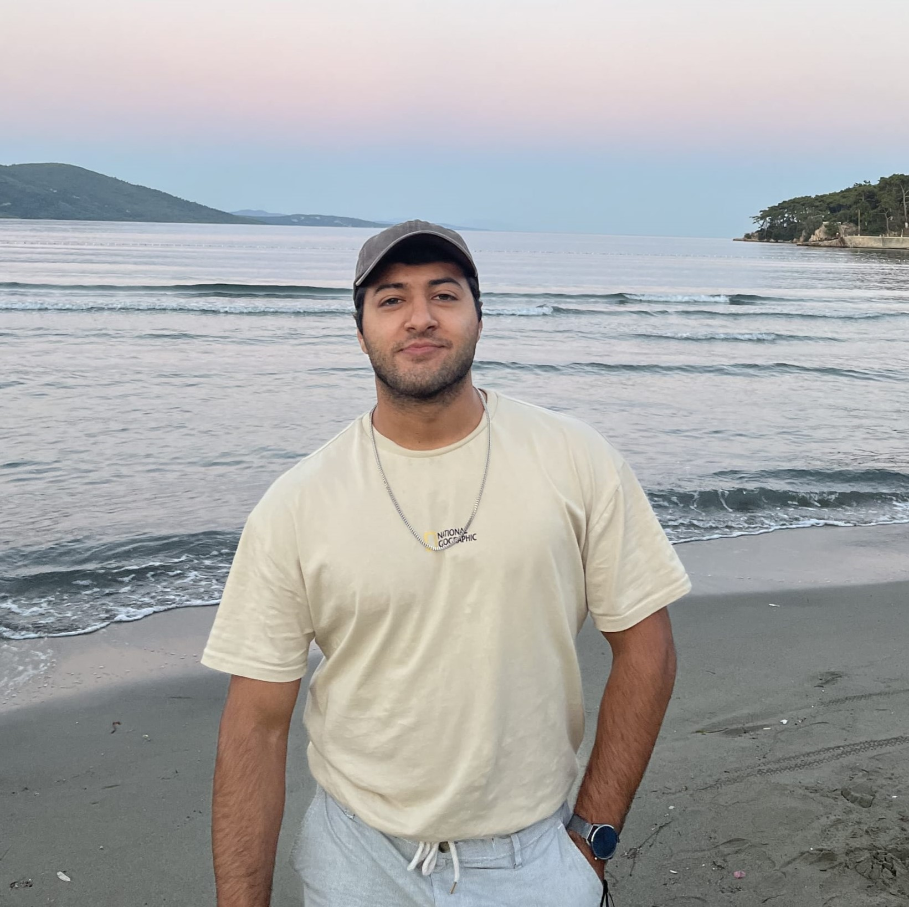

<!DOCTYPE html>
<html>
	<head>
		<meta charset="UTF-8">
		<title>Mehmet Kırtışoğlu</title>
		<link rel="stylesheet" href="style.css">
		<link rel="stylesheet" href="reset.css">
		<meta name="viewport" content="width=device-width, initial-scale=1.0" />
	</head>
</html>
<header class="header-main">
	<a href="index.html"><button>About</button></a>
	<a href="CV.html"><button>CV</button></a>
	<a href="Research.html"><button>Research</button></a>
	<a href="Teaching.html"><button>Teaching</button></a>
</header>
<nav class="burger-menu">
	<ul>
	<li><a href="index.html"><button>About</button></a></li>
	<li><a href="CV.html"><button>CV</button></a></li>
	<li><a href="Research.html"><button>Research</button></a></li>
	<li><a href="Teaching.html"><button>Teaching</button></a></li>
	</ul>
</nav>
<body>
	<div class="div-profile">
		<div class="div-profile-photo">
		<center></center>
		</div>
	
		<div class="div-profile-info">
			<center><h2>Mehmet Kırtışoğlu</h2>
			
			<a href="http://www.fen.bilkent.edu.tr/~cvmath/" target="blank"></a><br>
			Bilkent University Department of Mathematics 06800 Ankara, Türkiye<br><br>
			
			<b>Contact me:</b><br><br>
			<a href="mailto:m.kirtisoglu@bilkent.edu.tr" target="blank"></a>&ensp;&ensp;&ensp;
	
			<a href="https://twitter.com/mehmetkirtiss" target="blank"></a>&ensp;&ensp;&ensp;
	
			<a href="https://www.instagram.com/mehmetkirtiss/" target="blank"></a>
			</center>
		</div>
	</div>
	
	<div class="div-main">
		
	<div class="child">
	<h2> Mehmet Kırtışoğlu</h2>
	<p>
	Hi! My name is Mehmet, and I completed my master's degree under the supervision of <a href="http://www.fen.bilkent.edu.tr/~yalcine/" target="blank">
	Prof. Ergün Yalçın</a> in the <a href="http://www.fen.bilkent.edu.tr/~cvmath/" target="blank">department of
	mathematics at Bilkent University</a>, in July 2024. I also received my Bachelor's degree from the Mathematics department of 
	Bilkent universiy in 2022.
	</p>
	<p>
	My research interest lies in algebraic topology: Homotopy, homology, cohomology, and category theory. I studied the homotopy theory of simplicial objects and the 
	cohomology of small categories as a part of my master's thesis. In particular, my thesis focuses on R. W. Thomason's homotopy colimit theorem and its cohomology version.
	My <a href="CV.html">CV<a/> is embedded in this website as well.
	</p>
	<hr>
	<br><br>
	<p>Last modified:</p>
	<p id="demo"></p>
	
	<script>
	let text = document.lastModified;
	document.getElementById("demo").innerHTML = text;
	</script>
	<script src="main.js"></script>
	</div>
	
	</div>

</body>
